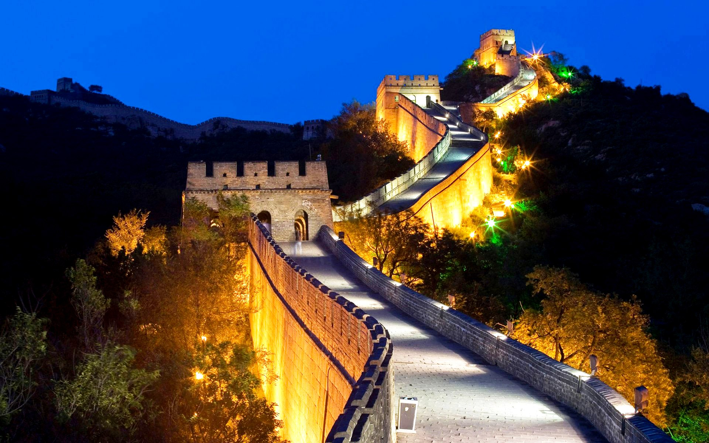

Китай
Традиционные китайские праздники
Праздников в Китае много, но самыми любимыми считаются:
- Новый год
- Международный женский день
- Дни рождения
Примечательно, что 8 Марта празднуют не все женщины, а только те, кто уже стали матерями. Но официальный выходной получают все девушки, а мужчины в этот день работают. Праздник фонарей или Юаньсяо — национальный праздник Китая, традиционно отмечаемый в 15-й день первого месяца Нового года. В этот день принято есть пирожные из рисовой муки со сладкой начинкой. Они символизируют единение семей. Вечером в городах устраивают ярмарки фонарей, а в деревнях — танцевальные шоу, фейерверки, хождение на ходулях, соревнования. В новогоднюю ночь китайцы стараются не ложиться спать до самого утра, чтобы поприветствовать новый день Нового года. Этот обычай называется «шоусуй». Ночью обязательно запускают петарды и фейерверки, стараются шуметь как можно больше. Считается, что так можно отпугнуть всех злых духов. Подарками обмениваются утром. В дни празднования на улицах Китая проходят фестивали с участием больших ростовых кукол и фигур — драконов или львов.
Традиции китайской кухни
Китайцы очень любят поесть. Даже при встрече вопрос «ты поел?» задают гораздо чаще, чем «как дела?» Современные семьи готовят дома не так часто, предпочитая есть в кафе или ресторанах. Но порядок приемов пищи строго соблюдается. В Китае принято громко чавкать, так вы показываете повару или хозяину дома, что вы в восторге от его блюд, и вам очень вкусно. Также принято мусорить за столом. Не считается зазорным или постыдным выплюнуть косточку или шкурку прямо себе под ноги. Если в Европе суп подают как основное блюдо, то в Китае он подаётся в конце угощения. Вместо вилок и ложек китайцы часто пользуются палочками.
Современные необычные традиции в Китае
Многие китайские обычаи и ритуалы ушли в прошлое из-за влияния Запада. Но некоторые современные традиции до сих пор могут удивить любого европейца.
- Китайцы очень дружелюбный народ, поэтому даже при знакомстве они могут начать называть вас своим другом.
- Отказ в Китае воспринимают как знак вежливости. Китайцы уверены, что вы отказываетесь от их предложения помощи или услуг из-за стеснительности. Поэтому здесь принято повторять отказ два или три раза.
- В Китае цифра 4 считается несчастливой. Поэтому во многих зданиях отсутствует четвёртый этаж, и нет квартир с номерами 4.
- В Китае принято обращаться друг ко другу по фамилии. По имени обращаются только к членам семьи и близким друзьям.
- Если собаками, которые служат в полиции, уже никого не удивить, то помощники китайских правоохранителей поражают — там на работу берут гусей. Считается, что зрение у них лучше, чем у собак, и они более агрессивны.
- Подарки дарят обязательно вместе с ценником, чтобы продемонстрировать всем, насколько он дорого стоит. Принимать презент нужно двумя руками.
Туристические города
Пекин
Пекин является столицей Китая и славится своими историческими достопримечательностями, такими как Запретный город, Храм Неба и Великая Китайская стена. Запретный город был дворцом императоров династий Мин и Цин и сейчас является объектом Всемирного наследия ЮНЕСКО. Храм Неба - это комплекс религиозных сооружений, который использовался императорами для ежегодных церемоний, а Великая Китайская стена является знаковым символом многовековой истории Китая. Помимо этих исторических достопримечательностей, Пекин также является современным городом с множеством торговых центров, ресторанов и музеев. Это популярное направление для туристов со всего мира.
Запретный город
Храм Неба
Великая Китайская стена
Шанхай
Шанхай - крупнейший город Китая и мировой финансовый центр. Он знаменит своими небоскребами, такими как башня "Восточная жемчужина" и Шанхайская башня. Город также известен своими традиционными садами, такими как сад Юйюань и водный город Чжуцзяцзяо. Шанхай является популярным местом для туристов, которые хотят познакомиться с современной стороной Китая, а также с его богатой историей и культурой. Город также славится своей кухней, такой как сяолунбао (суповые клецки) и шэнцзяньбао (жареные булочки).
Восточная жемчужина
Шанхайская башня
Сад Юйюань
Сиань
Сиань - древний город, который был столицей Китая во времена династии Тан. Он знаменит своей Терракотовой армией, которая представляет собой коллекцию терракотовых скульптур, изображающих армию первого императора Китая. Город также известен своими городскими стенами, которые были построены во времена династии Мин. Сиань - популярное место для туристов, интересующихся историей и культурой. Город также известен своей уличной едой, такой как roujiamo (китайские гамбургеры) и yangrou paomo (суп из баранины с хлебом).
Террактовая армия
Гуйлинь
Гуйлинь - это город на юге Китая, который славится своей природной красотой. Он окружен карстовыми горами и имеет живописный ландшафт, который на протяжении веков вдохновлял поэтов и художников. Город также известен своей рекой Ли, которая является популярным местом для речных круизов. Гуйлинь - популярное место для туристов, которые хотят познакомиться с природной красотой Китая. Город также славится своей кухней, такой как гуйлиньская рисовая лапша и пивная рыба.
Чэнду
Чэнду - это город на юго-западе Китая, который славится своими пандами. Здесь находится научно-исследовательская база Чэнду по разведению гигантских панд, которая является центром по сохранению панд. Город также известен своей острой сычуаньской кухней, такой как тофу мапо и хотпот. Чэнду - популярное место среди туристов, желающих увидеть панд и попробовать сычуаньскую кухню. В городе также расположено множество исторических мест, таких как мемориальный храм Ухоу и соломенный домик Ду Фу.
Мемориальный храм Ухоу
Соломенный домик Ду Фу